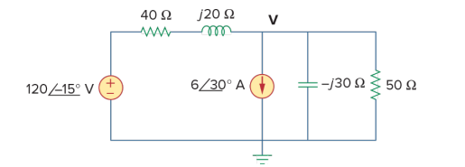
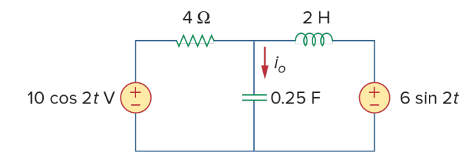
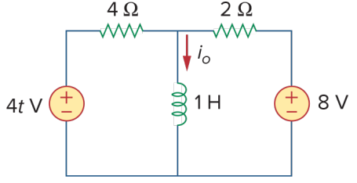
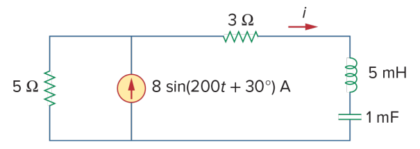
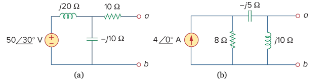
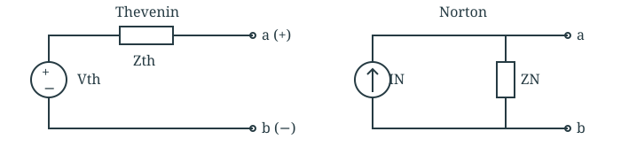

ECET 250E · Chapter 10
Problem Set 9
Clean worked solutions · Short steps, full calculations.
Problem Set 8 solutions →
10.7 · Nodal analysis
Find the node voltage V.

Write KCL
Current entering from the left equals the three currents leaving the node.
40+j20120∠(−15∘)−V=6∠30∘+−j30V+50V Collect the V terms
Move the current source to the left and factor V on the right.
V(40+j201+−j301+501)=40+j20120∠(−15∘)−6∠30∘ Divide in rectangular form
Use rectangular form when adding or subtracting complex numbers.
V=0.0400+j0.023333−3.1885−j4.7805=−111.488−j54.472 V Convert to polar form
Find the magnitude and angle. Both parts are negative, so V is in the third quadrant.
∣V∣=111.4882+54.4722=124.084,∠V=−153.96∘
AnswerV=124.08∠(−153.96∘) V Substituting this voltage into KCL balances the entering and leaving currents.
10.25 · Mesh analysis
Find the downward capacitor current iₒ(t).

Convert to phasors
Use cosine as the reference. The sine source has a −90° phase shift.
ω=2,V1=10,V2=6∠(−90∘)=−j6 VZL=j(2)(2)=j4 Ω,ZC=j(2)(0.25)1=−j2 Ω Write the mesh equations
Choose clockwise mesh currents I₁ on the left and I₂ on the right. Their currents oppose each other in the capacitor.
(4−j2)I1+j2I2=10j2I1+j2I2=j6 Solve for the two currents
Divide the first equation by 2 and the second by j2. Substitute I₂ = 3 − I₁ into the first.
(2−j)I1+jI2=5,I1+I2=3(2−j)I1+j(3−I1)=5I1=2−j25−j3=2+j0.5 AI2=3−I1=1−j0.5 A Find the shared current
Downward capacitor current is the left mesh current minus the right mesh current.
Io=I1−I2=1+j1=1.414∠45∘ A
Answerio(t)=1.414cos(2t+45∘) A The mesh currents satisfy both equations; their difference gives the marked downward current.
10.40 · Superposition
Find the downward inductor current iₒ(t).

Keep only the DC source
Short the AC voltage source. At DC steady state, the inductor is a short circuit.
Io,DC=28=4 A Keep only the AC source
Short the 8 V source. At ω = 4 rad/s, the inductor impedance is j4 Ω.
ZL=jωL=j(4)(1)=j4 Ω Transform the AC source
The 10 V source with 4 Ω in series becomes a 2.5 A source with 4 Ω in parallel. Combine the two parallel resistors.
Is=410∠0∘=2.5∠0∘ A,Rp=4∥2=4+24(2)=34 Ω Use current division
Find the current in the inductor branch.
Io,AC=2.54/3+j44/3=0.25−j0.75=0.7906∠(−71.57∘) A Add in the time domain
Add the constant DC current to the AC waveform.
io(t)=Io,DC+io,AC(t)
Answerio(t)=4+0.7906cos(4t−71.57∘) A The average current is 4 A. The AC part has zero average; different frequencies are added in the time domain.
10.49 · Source transformation
Find i(t) in the right-hand branch.

Find the impedances
Keep a sine reference for this question, so the source is 8∠30° A.
ω=200,ZL=j(200)(0.005)=j1 ΩZC=j(200)(0.001)1=−j5 Ω Transform the source
Replace the current source and parallel 5 Ω resistor with a voltage source and series 5 Ω resistor.
Vs=IsR=(8∠30∘)(5)=40∠30∘ V Add the series impedances
The transformed circuit is one series loop.
Z=5+3+j1−j5=8−j4=8.944∠(−26.565∘) Ω Divide voltage by impedance
Divide magnitudes and subtract angles.
I=8.944∠(−26.565∘)40∠30∘=4.472∠56.565∘ A
Answeri(t)=4.472sin(200t+56.57∘) A The negative impedance angle means current leads the source. Keep the sine reference in the final answer.
10.55(a) · Thevenin and Norton
Find both equivalent circuits at terminals a–b.

Find the equivalent impedance
Turn off the independent voltage source by shorting it. The 10 Ω resistor is in series with the parallel reactances.
Zth=ZN=10+(j20∥−j10)=10+j20−j10(j20)(−j10)=10−j20 Ω Find the open-circuit voltage
With a–b open, no current flows through 10 Ω. The terminal voltage is the capacitor voltage.
Vth=(50∠30∘)j20−j10−j10=−50∠30∘=50∠(−150∘) V Find the Norton current
Divide the open-circuit voltage by the equivalent impedance.
Zth=22.361∠(−63.435∘) ΩIN=22.361∠(−63.435∘)50∠(−150∘)=2.236∠(−86.565∘) A
AnswerVth=50∠(−150∘) V,Zth=ZN=10−j20 ΩIN=2.236∠(−86.57∘) A Thevenin: voltage source in series with Zth. Norton: current source in parallel with ZN. Use + at a and a Norton source arrow from b to a.

10.55(b) · Thevenin and Norton
Find both equivalent circuits at terminals a–b.
Find the equivalent impedance
Turn off the independent current source by opening it. Looking into a–b, j10 Ω is in parallel with 8 − j5 Ω.
Zth=ZN=j10∥(8−j5)=j10+8−j5j10(8−j5)=8.9888+j4.3820=10∠25.99∘ Ω Find the inductor current
Restore the source and leave a–b open. Use current division between 8 Ω and the series branch −j5 + j10.
IL=(4∠0∘)8−j5+j108=8+j532 A Find the open-circuit voltage
The voltage at a–b is across the j10 Ω inductor.
Vth=j10IL=8+j5j320=17.9775+j28.7640=33.920∠57.99∘ V Find the Norton current
Divide magnitudes and subtract angles.
IN=ZthVth=10∠25.99∘33.920∠57.99∘=3.392∠32.01∘ A
AnswerVth=33.920∠57.99∘ V,Zth=ZN=10∠25.99∘ ΩIN=3.392∠32.01∘ A Thevenin: Vth in series with Zth. Norton: IN in parallel with ZN. Use + at a and a Norton source arrow from b to a.